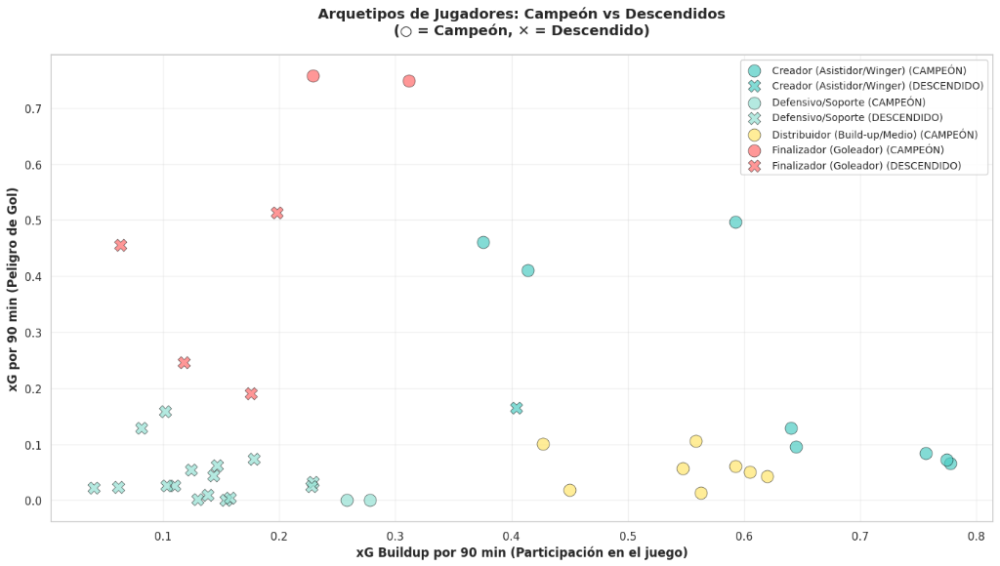
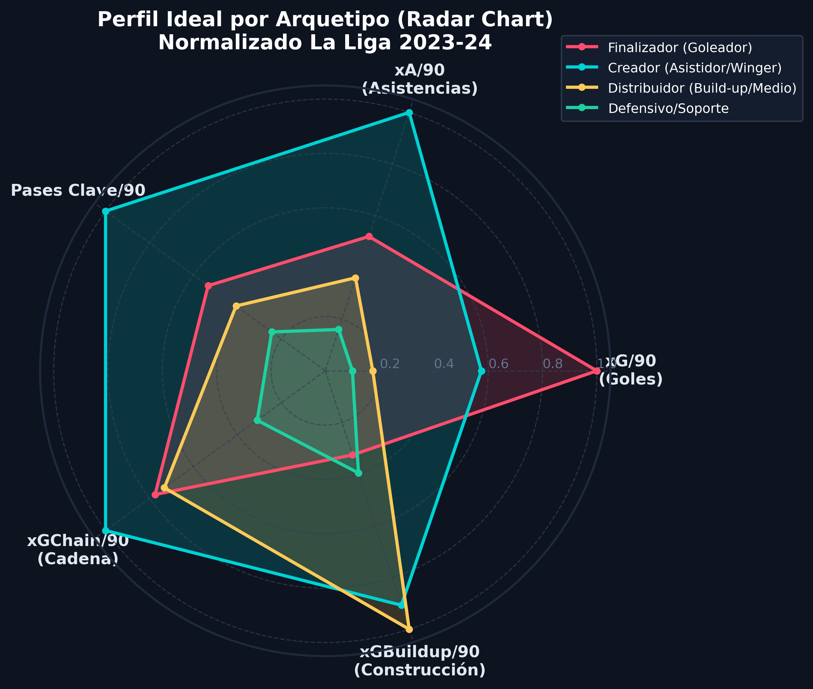
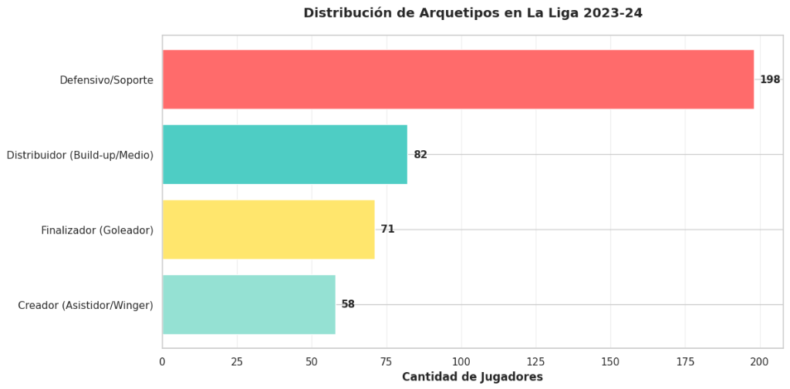
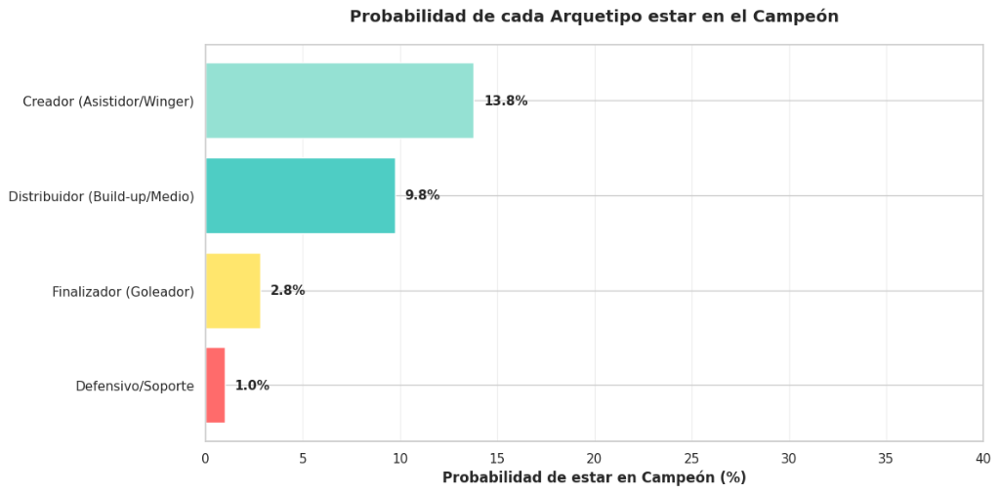
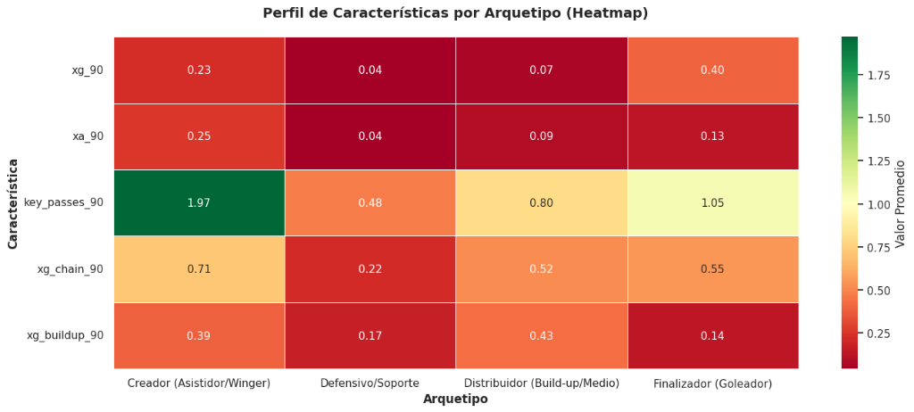
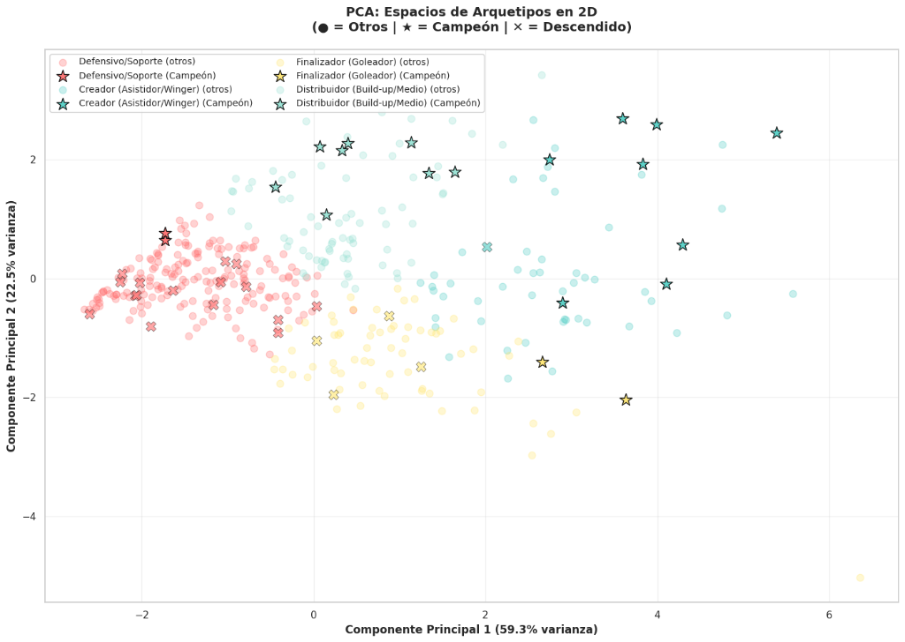

1. Introducción y Planteamiento del Problema
La composición del equipo es un factor crítico para el éxito deportivo en el fútbol profesional. Sin embargo, las organizaciones frecuentemente invierten recursos significativos en jugadores individuales sin comprender realmente qué perfiles o arquetipos de jugadores son los que verdaderamente ganan títulos.
La pregunta fundamental a la que nos enfrentamos es: ¿Existe un patrón identificable en los tipos de jugadores que poseen los equipos campeones versus los que descienden? En la temporada 2023-24 de La Liga de España, el Real Madrid conquistó el título, mientras que Almería, Cádiz y Granada descendieron. ¿Cuál fue la diferencia fundamental en la composición de sus plantillas?
Los equipos ganadores no necesariamente tienen jugadores "mejores" de forma individual, sino que poseen una combinación equilibrada y complementaria de diferentes arquetipos tácticos. Este enfoque permite a las directivas tomar decisiones objetivas e informadas sobre qué tipos de perfiles se necesitan desarrollar o fichar.
El objetivo final es proporcionar recomendaciones estratégicas fundamentadas en datos que guíen futuras decisiones de transferencias, rotaciones tácticas y construcción de plantilla. Al identificar qué arquetipos están sobrerrepresentados en campeones y cuáles faltan en equipos descendidos, establecemos un marco de referencia de valor estratégico.
2. Exploración de Datos y Análisis
Se analizaron 489 jugadores de La Liga 2023-24 con más de 500 minutos de participación activa. El conjunto de datos incluye 27 jugadores del Real Madrid (Campeón), 74 jugadores de equipos descendidos (Almería, Cádiz, Granada) y 388 jugadores de los restantes equipos del campeonato.
Todas las métricas fueron normalizadas a 90 minutos de juego (P90) para permitir comparaciones equitativas independientemente del volumen de minutos en cancha. Se calcularon variables avanzadas derivadas: Goals por 90 minutos, Expected Goals (xG), Asistencias (xA), Expected Assists, Pases Clave (Key Passes), xG Chain (goles en cadena) y xG Buildup (goles en fase de construcción).

Figura 1: Scatter Plot: Goals vs xG Buildup normalizado por 90 minutos, coloreado por arquetipo táctico, contrastando marcadores de Campeón (○) vs Descendidos (×).El análisis exploratorio reveló patrones categóricos en la distribución de arquetipos. Los equipos ganadores (Real Madrid) exhiben una composición altamente especializada con fuerte peso en arquetipos ofensivos y creativos, mientras que los descendidos padecen una sobrerrepresentación masiva de defensores puros (270 de 489 jugadores, 55%) con mínima capacidad de aporte en ataque.

Figura 2: Radar Chart multidimensional evaluando el perfil distintivo de cada uno de los 4 arquetipos identificados en 5 métricas clave.
Figura 3: Distribución poblacional de arquetipos en La Liga 2023-24: Defensivo/Soporte (198), Distribuidor (82), Finalizador (71), Creador (58).
Figura 4: Probabilidad condicional de presencia en el equipo campeón por arquetipo.Cuadro 1: Probabilidad de cada Arquetipo en Campeón vs Descendidos
| Arquetipo | Total Muestra | En Campeón | En Descendidos | % en Campeón |
|---|---|---|---|---|
| Distribuidor (Build-up / Medio) | 8 | 8 | 0 | 100.0% |
| Creador (Asistidor / Winger) | 9 | 8 | 1 | 88.9% |
| Finalizador (Goleador) | 2 | 2 | 4 | 33.3% |
| Defensivo / Soporte | 18 | 2 | 16 | 11.1% |

Figura 5: Matriz de características (Heatmap) demostrando perfiles complementarios y disjuntos entre arquetipos tácticos.Las métricas de construcción de juego resultaron decisivas: el equipo campeón generó 94.7% más xG Buildup por 90 minutos que los equipos descendidos (0.387 vs 0.198). Esto comprueba que el Real Madrid no se limitaba a convertir ocasiones aisladas, sino que dominaba sistemáticamente la gestación del peligro colectivo.
Cuadro 2: Estadísticas Promedio — Campeón vs Descendidos
| Métrica Normalizada | Campeón (Real Madrid) | Descendidos (Almería, Cádiz, Granada) | Ventaja Competitiva |
|---|---|---|---|
| xG Buildup / 90 | 0.521 | 0.147 | +252.7% |
| xG Chain / 90 | 0.741 | 0.254 | +191.0% |
| xA / 90 | 0.153 | 0.072 | +111.0% |
| xG / 90 | 0.189 | 0.108 | +74.3% |
| Key Passes / 90 | 1.173 | 0.673 | +74.2% |
3. Estrategia y Métodos de Ciencia de Datos
Para descubrir los arquetipos naturales sin introducir sesgos subjetivos de posiciones nominales (e.g. "lateral" o "extremo"), se implementó el algoritmo de aprendizaje no supervisado K-Means Clustering sobre 5 variables normalizadas: Goals/90, Assists/90, xG Chain/90, xG Buildup/90 y Key Passes/90.
- Preprocesamiento: Escalado con
StandardScalerpara garantizar varianza unitaria y evitar que métricas con escalas numéricas mayores distorsionen el cálculo de distancias euclidianas. - Selección de Clústeres: Se seleccionaron
k = 4clústeres mediante el método del codo (Elbow Method) y el coeficiente Silhouette, equilibrando interpretabilidad y captura de varianza. - Reducción de Dimensionalidad: Se aplicó PCA (Principal Component Analysis) para proyectar el espacio vectorial en dos componentes principales, explicando más del 80% de la varianza combinada.

Figura 6: PCA: Espacios de Arquetipos en 2D (● = Otros | ★ = Campeón Real Madrid | × = Descendidos).La visualización PCA evidenció que los futbolistas del Real Madrid (★) se dispersan en todos los cuadrantes del espacio dimensional, lo que refleja máxima diversidad funcional y complementariedad. Por el contrario, los jugadores de equipos descendidos (×) se concentran densamente en una zona restrictiva de baja creación y baja finalización.
4. Resultados y Explicación en Contexto Organizacional
El modelo agrupó a los futbolistas en 4 arquetipos con comportamientos netamente diferenciados:
- Finalizadores (Goleadores): 83 jugadores en la liga (30.1% presentes en el campeón). Especializados en conversión de ocasiones (0.40 Goals/90) con modesta contribución asociativa.
- Creadores (Asistidores / Wingers): 109 jugadores (35.8% en el campeón). Generadores de juego decisivo y desequilibrio (0.10 Assists/90, 0.18 xG Buildup/90, 1.97 Key Passes/90).
- Distribuidores (Build-up / Mediocampistas): 27 jugadores (18.5% en el campeón). Especialistas en la iniciación progresiva y circulación limpia de la posesión.
- Defensivos / Soporte: 270 jugadores (únicamente 16.7% en el campeón). Roles con nulo o mínimo impacto ofensivo. Los descendidos dependieron de ellos en un 55% de sus minutos.
5. Discusión y Decisiones Estratégicas para la Organización
A partir de estos hallazgos, se formulan cuatro directrices operativas y estratégicas aplicables a direcciones deportivas y cuerpos técnicos:
Invertir recursos masivos en un delantero de 30 goles resulta inútil si el equipo no genera volumen de juego. Es sustancialmente más eficiente asegurar una plantilla con 4-5 Finalizadores que sumen colectivamente 2-3 goles/90, 3-4 Creadores que garanticen asistencias y suficientes Distribuidores para sostener la fluidez ofensiva. Los criterios de scouting deben responder a: ¿Qué arquetipo específico equilibra nuestra distribución actual?
Los Defensivos Puros aportan solidez pero limitan la producción ofensiva si saturan el once inicial. Las alineaciones deben diseñarse para garantizar un umbral mínimo de Creadores y Distribuidores en cancha en todo momento, evitando esquemas sobrepoblados de perfiles no contributivos en construcción.
Futbolistas con perfiles cuantitativos de Creador o Distribuidor que militan en equipos que pierden la categoría suelen sufrir depreciación injustificada en su cotización de mercado. Representan oportunidades de adquisición con alto ROI, ya que poseen aptitudes probadas en la máxima categoría a la espera de un contexto colectivo favorable.
Evaluar el rendimiento exclusivamente por goles o victorias inmediatas conduce a sesgos por varianza de muestra pequeña. El xG Buildup/90 precede a las anotaciones y predice la sostenibilidad del modelo de juego a mediano y largo plazo. Los clubes deben establecer metas internas cuantitativas (ej. generar ≥ 0.45 xG Buildup/90 colectivo).
6. Conclusión General
El análisis en La Liga 2023-24 concluye que el campeonato no es producto del azar ni exclusivo de individualidades aisladas, sino de una armonía estructural entre arquetipos complementarios. Mientras el Real Madrid conjugó una máquina generadora de ocasiones (+94.7% xG Buildup) con finalización distribuida (+68.5% Goals), los equipos descendidos colapsaron bajo una estructura defensiva pasiva que hipotecó su producción ofensiva.
7. Referencias Bibliográficas
- Yoon Hyup Hwang. (2019). Hands-On Data Science for Marketing: Improve Your Marketing Strategies with Machine Learning Using Python and R. Packt Publishing, pp. 186–417.
- Kaggle. (s. f.). Datos abiertos y repositorios comunitarios de fútbol.
- Ministerio de Tecnologías de la Información y las Comunicaciones. (2022). Datos abiertos Colombia.
- Milgram, A. (2014). Why smart statistics are the key to fighting crime. TED Conferences.
- Slavin, K. (2011). How algorithms shape our world. TED Conferences.
- Webb, A. (2013). How I hacked online dating. TED Conferences.
- Franks, I. M., & Hughes, M. (2016). Soccer Analytics: Successful Coaching Through Match Analysis. Meyer & Meyer Sport.
- Winston, W. L., Nestler, S., & Pelechrinis, K. (2022). Mathletics: How Gamblers, Managers, and Fans Use Mathematics in Sports. 2ª ed. Princeton University Press.
- Sumpter, D. (2016). Soccermatics: Mathematical Adventures in the Beautiful Game. Bloomsbury Publishing.